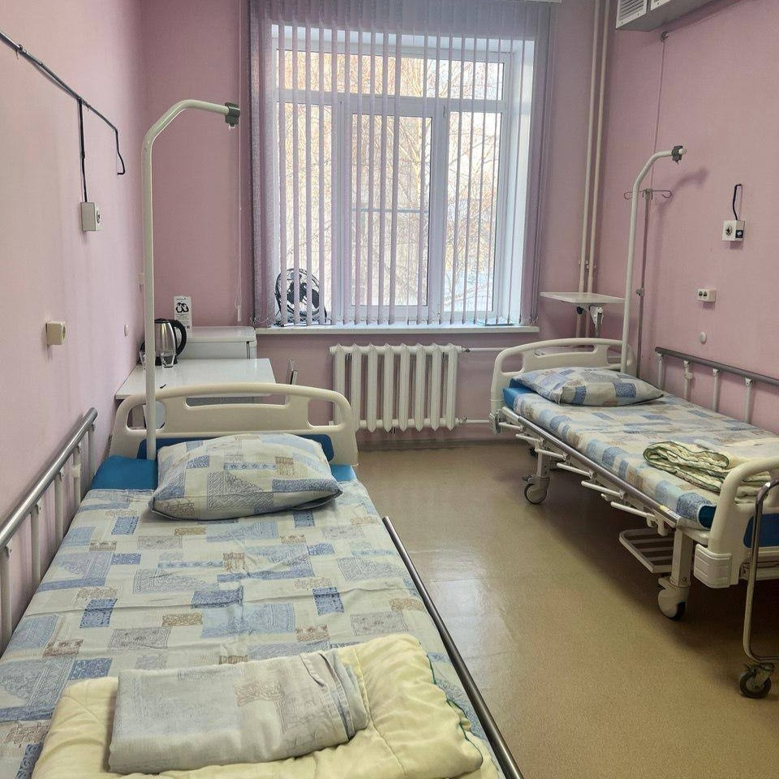
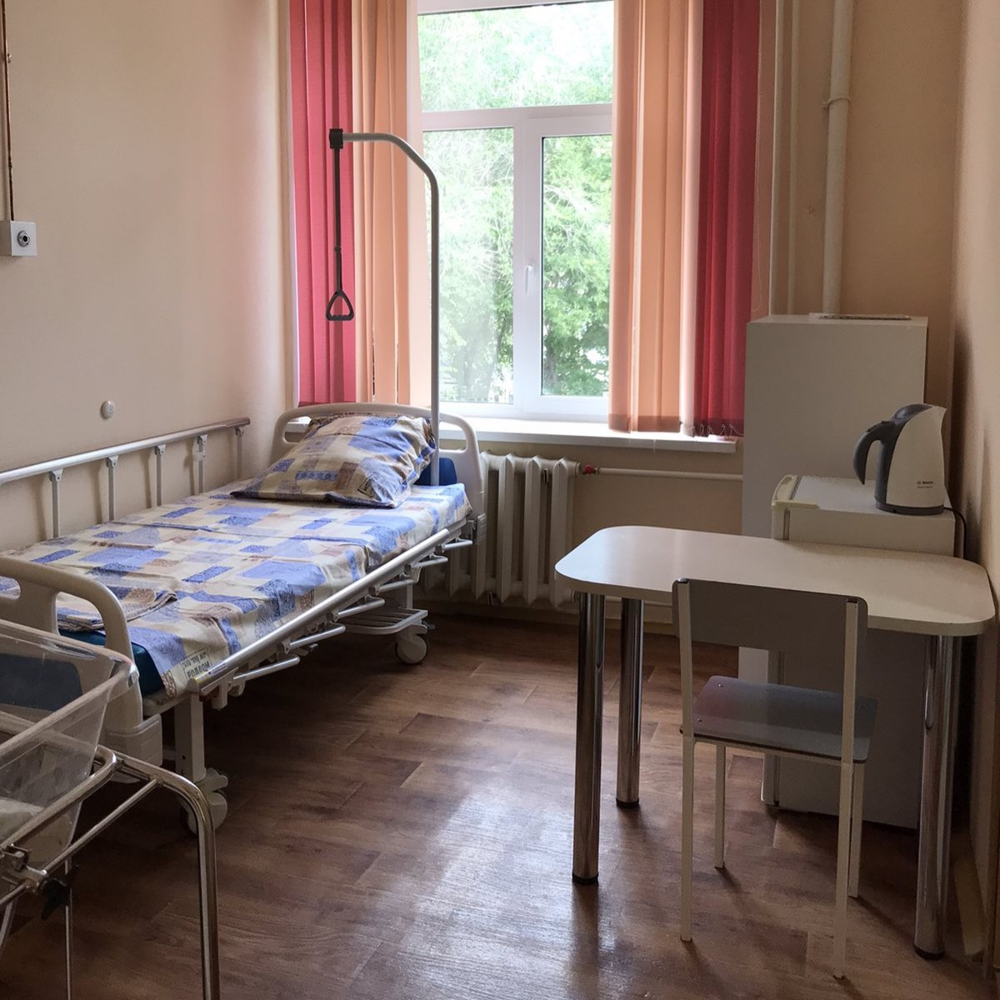
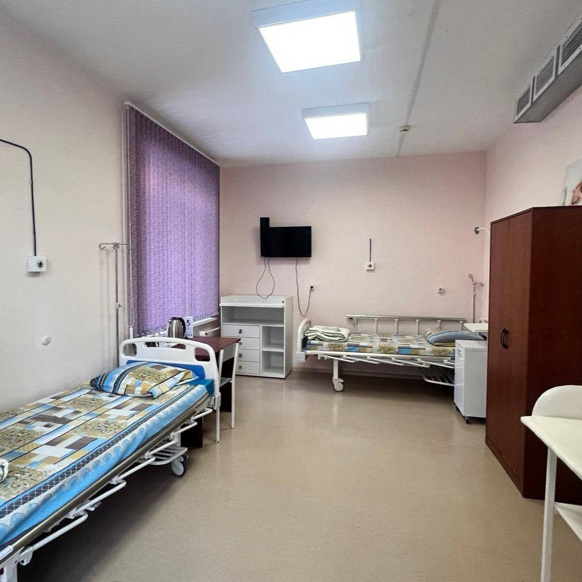
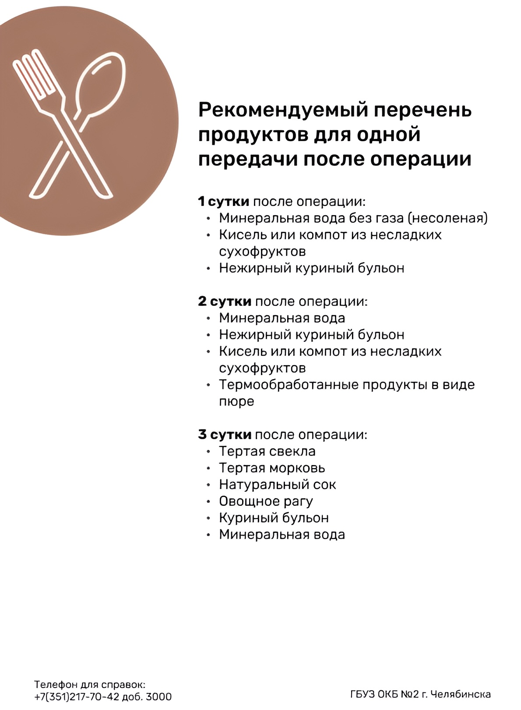

Часы передач
- Время приёма передач — ежедневно с 11:00 до 13:00 и с 17:00 до 18:50.
- Место передачи — стол справок (Гагарина, д.18, к.2, вход №2).
- Правила — все продукты и вещи должны быть сложены в пакет и подписаны, кому они предназначены.
Время и правила посещения в коммерческих палатах
- Кто может посещать — по одному человеку старше 18 лет
- Время посещений — ежедневно с 17:00 до 18:50
- Требования — при себе иметь сменную обувь и маску
Стоимость и правила оплаты коммерческих палат
- Наличие — платные палаты есть в дородовом и послеродовом отделении
- Оплата — производится в день выписки за фактическое количество проведённых суток
- Способы оплаты — доступны все варианты
Оснащение коммерческих палат
Двухместная палата в дородовом отделении
-
🧊 Холодильник
🍵 Чайник
🚻 Санузел в палате
🔥 Микроволновка в палате
💁♀️ Фен
🪟 Жалюзи блэкаут

Двухместная (блочного типа)
В блоке 2 палаты
-
🧊 Холодильник
🍵 Чайник
🚻 Санузел на блок

Одноместная
-
🧊 Холодильник
🍵 Чайник
📺 Телевизор
🔥 Микроволновка в палате

Семейная
-
🧊 Холодильник
🍵 Чайник
🔥 Микроволновка в палате
📺 Телевизор

Список разрешённых продуктов

Сопровождение партнёром на родах
- Анализы партнёра — ВИЧ и флюорография (не старше 6 мес.)
- Одежда — чистая сменная: спортивные штаны, футболка, резиновые тапки
- Процесс — партнёр проходит в родзал из приёмного покоя при раскрытии и согласии врача
- Кесарево сечение — возможно партнёрское сопровождение
- Запись — предварительная не требуется
Сроки подписания книжек
Подписание книжек с 32 недели беременности.
Ранее можно обратиться в Линию заботы
Ранее можно обратиться в Линию заботы
Онлайн регистрация и госпитализация
Для онлайн регистрации заполните
форму
и отправьте скрининги на
Линию заботы
- Плановая госпитализация — будни с 08:00 до 14:00
- Вход — №1 (приёмный покой)
- При себе — паспорт, полис, СНИЛС, диспансерная книжка, при браке — копии паспортов и свидетельства о браке
Количество пациенток в палатах
- Семейная — мама, ребёнок и родственник
- Одноместная — мама и ребёнок, разрешены посещения
- Двухместная — 2 мамы и 2 ребёнка, разрешены посещения
- Общая — до 4 мам с детьми
Выписка из роддома
- При самостоятельных родах — 3–4 сутки
- После КС — 5–6 сутки
- Возможны задержки при: субинволюции матки, потере веса у малыша, желтухе или других проблемах
Информация о порядке и времени выписки
- Проходит каждый день, включая выходные
- О времени выписки сообщают около 10:00
- Начало процедуры — с 14:00
- Родственники регистрируются по очереди
- Мама и малыш сопровождаются медсестрой; мама переодевается, ребёнка одевает детская медсестра
- В фойе ждут родственники; при согласии проводится фотосессия. Получение фото/видео сообщат отдельно